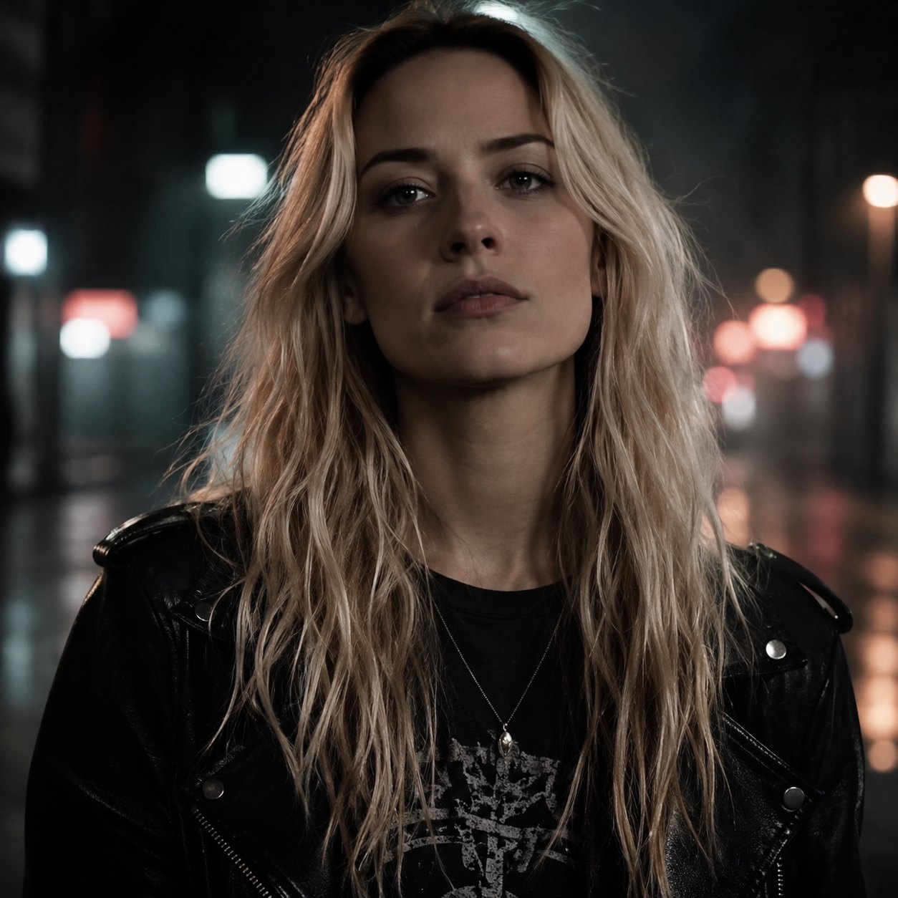
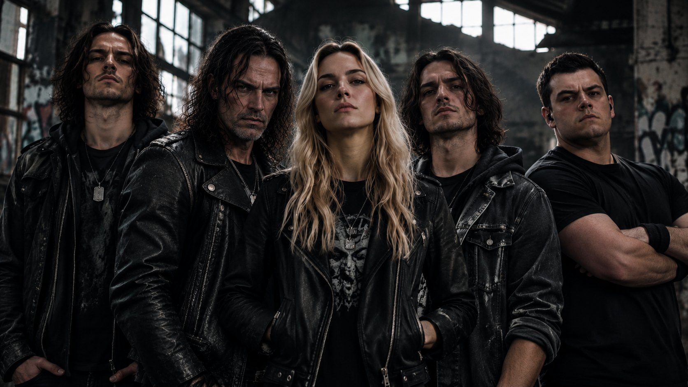
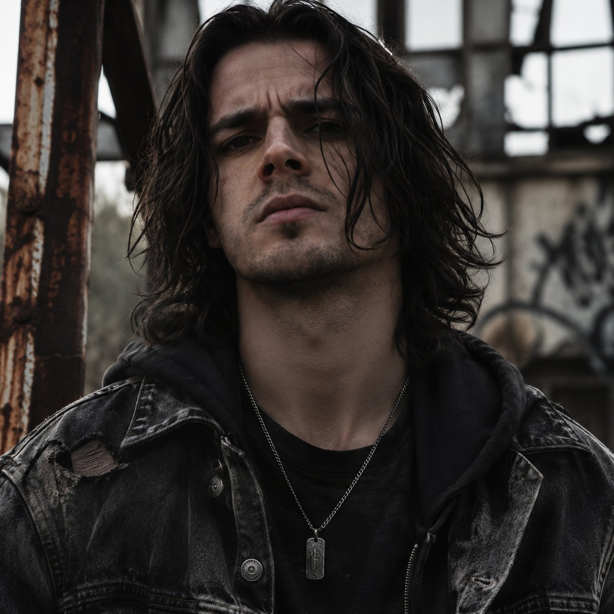
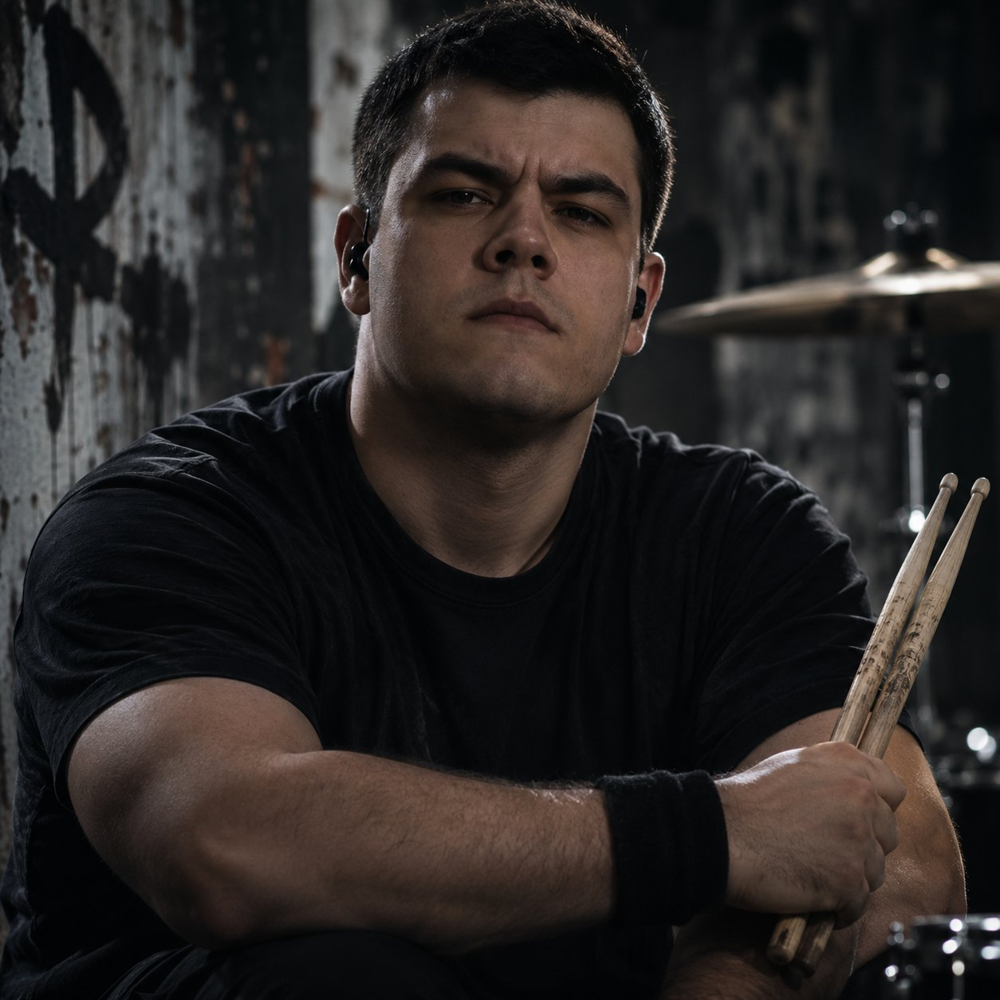
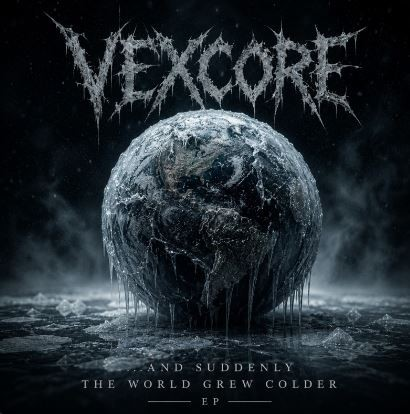
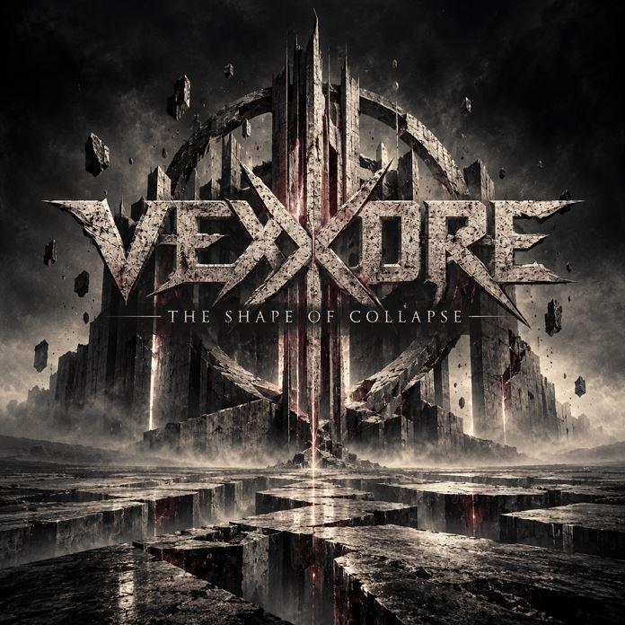

Mira Vex
Lead Vocals

Metalcore confronting the fractures of society and the struggles within.

Formed in Dortmund, Germany, in early 2026, VEXCORE is a five-piece metalcore band combining crushing riffs, aggressive breakdowns, atmospheric melodies and the contrast between powerful female vocals and raw screams.
Their music explores the darker sides of human behavior and modern society. From violence, abuse and toxic relationships to mental health struggles, obsession and inner conflict, VEXCORE confronts subjects that are often difficult to face.
The band released its first EP, ...and suddenly the world grew colder, in July 2026. Later that month, VEXCORE released its first music video, Prey Instinct, addressing the fear and violence women experience in public spaces and domestic environments. The video incorporates extensive real-world footage of assaults.
On November 21, 2026, VEXCORE will release its debut full-length album, The Shape of Collapse. Including all tracks from the debut EP, the album explores personal and societal breakdown through fear, violence, manipulation, grief and human suffering.
Five members. One sound.

Lead Vocals
Screams & Growls · Rhythm Guitar

Lead Guitar
Bass

Drums
News, releases and music videos from Dumpling Records.
From the first EP to the debut full-length.

The first VEXCORE release. All tracks also appear on the debut album.

The debut full-length album, including all tracks from the first EP.
Pre-save the album ↗Two different sides of VEXCORE.
Content note: Includes real-world footage of assaults and violence against women.
Watch on YouTube ↗An emotional exploration of loss, without defining the circumstances.
Watch on YouTube ↗